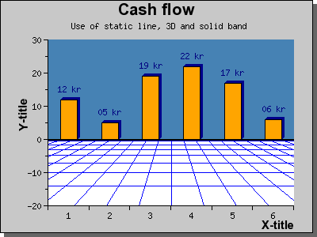

目次 前へ 次へ
すべてのパターンは以下の通りカスタマイズが可能です。
- ... バンドのカラーを変更する。
- ... PlotBand::SetDensity() メソッドを使用してパターンの密度を変更する。密度は 1 から 100 までの整数値で指定でき、値が高くなるほど密度が高くなります。たとえば、3DPLANE 形式で密度を 60 に設定した場合、下記のような外見が得られます。
- ... フレームをパターンの周囲に表示、非表示するには、PlotBand::ShowFrame() メソッドを使用します。フレームはバンドと同じカラーで表示されます。
- ... バンドとプロットの前後関係を PlotBand::SetOrder() メソッドで指定できます。デフォルトではバンドはプロットの下位にあります。
注意: 3DPLANE 形式のパターンでは、奥行きの指定が可能です。以下の通りに指定します。水平の値を変更するために関数を直接呼び出すことはできませんが、下のようにすれば可能です。
$band->prect->SetHorizon($aHorizon)
バンドは 3D の面と考えられます。
最後に、バンドを組み合わせる方法を紹介します。
 図 113:ラインと３DPLANE、SOLID バンドを組み合わせる
[ソース]
目次 前へ 次へ